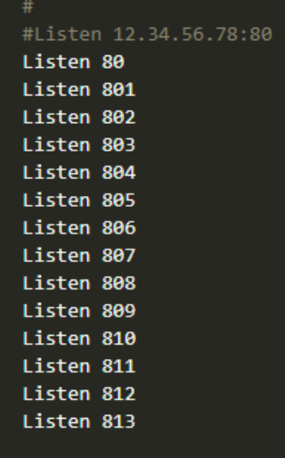
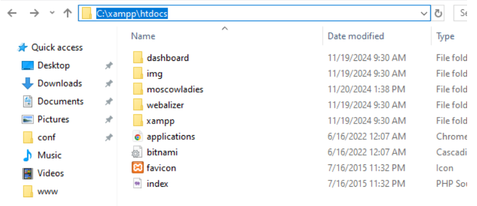
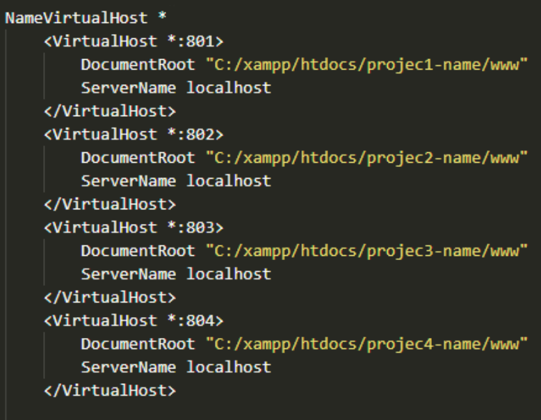

Download and install the latest version of XAMPP from the official website: https://www.apachefriends.org.
Locate the httpd.conf file in the following path:
C:/xampp/apache/conf/httpd.conf
Add the port listeners for the desired range (e.g., 801 - 813):
Listen 801
Listen 802
Listen 803
...
Listen 813
Example:
Move or add your project files to the following directory:
C:/xampp/htdocs
Example structure:
C:/xampp/htdocs/project1-name/www
C:/xampp/htdocs/project2-name/www

Locate the httpd-vhosts.conf file at:
C:/xampp/apache/conf/extra/httpd-vhosts.conf
Add a VirtualHost entry for each project and port:
NameVirtualHost *
<VirtualHost *:801>
DocumentRoot "C:/xampp/htdocs/project1-name/www"
ServerName localhost
</VirtualHost>
<VirtualHost *:802>
DocumentRoot "C:/xampp/htdocs/project2-name/www"
ServerName localhost
</VirtualHost>

After making changes to the httpd.conf and httpd-vhosts.conf files,
restart Apache using the XAMPP Control Panel.

Access your projects in a browser using the configured ports:
Every time you make changes to the httpd.conf or httpd-vhosts.conf files,
you must restart Apache in the XAMPP Control Panel.
Your local development environment is now ready to use.